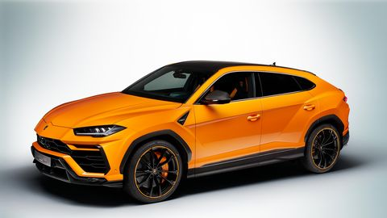
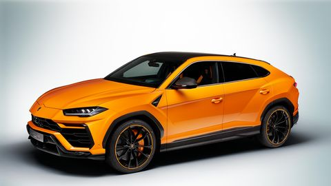
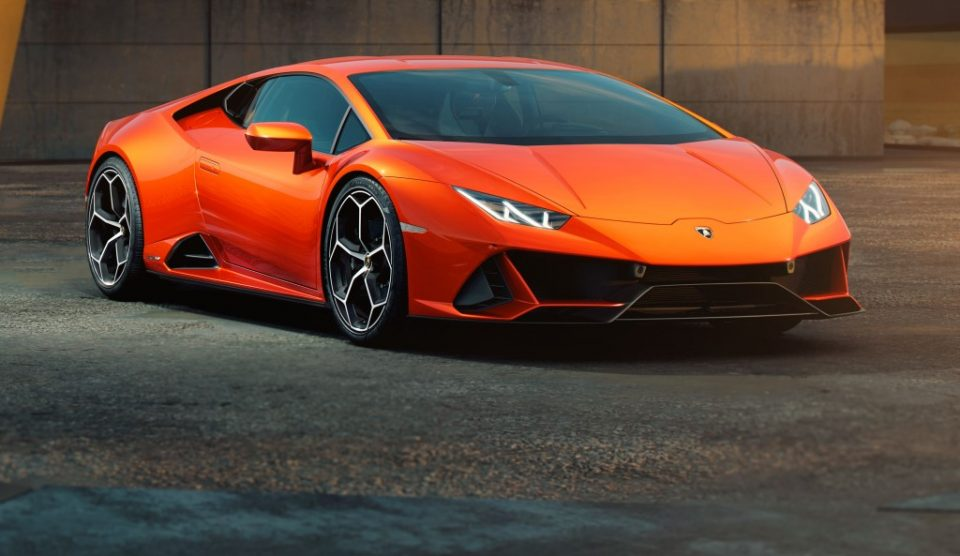
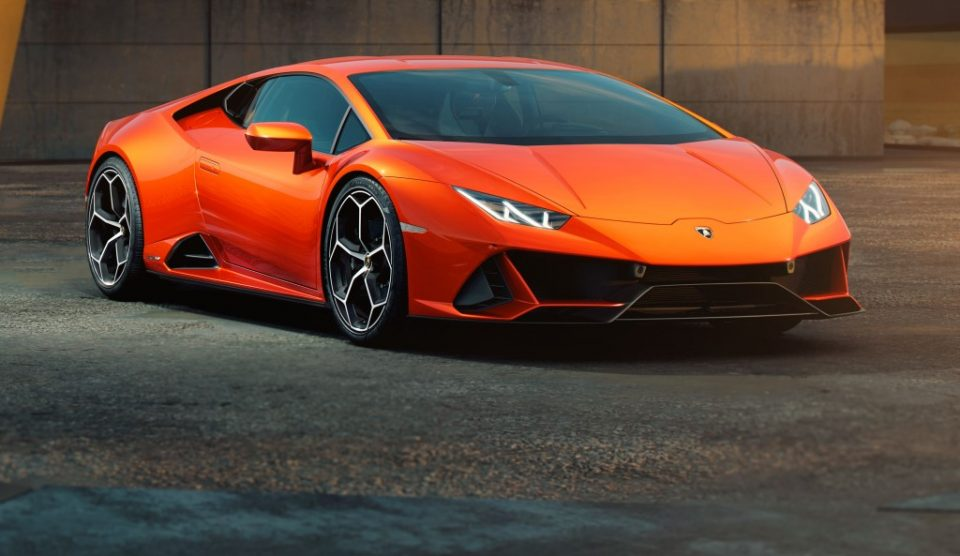

OTOMOBİLİM.COM
Lamborghini
Lamborghini, bir İtalyan süperspor otomobil, spor otomobil, SUV markasıdır. Feruccio Lamborghini (1916-1993) tarafından kurulmuştur. Bologna ile Modena arasındaki küçük bir köy olan Sant'Agata Bolognese'da firmanın merkezi ve fabrikası bulunmaktadır. Şirket Audi aracılığıyla Volkswagen AG'ye aittir.
Feruccio Lamborghini dönemi
Giotto Bizzarrini, Gian Paolo Dallara, Franco Scaglione ve Bob Wallace gibi yeteneklerle çalışarak ilk prototipini üretirler. GTV'den hemen sonra Lamborghini 350 GT'yi satışa sunulur. 350 GT'yi 400 GT takip eder. 400 GT ve ondan önceki modelden elde edilen gelir şirkete ilk spor otomobili üretir. Lamborghini Miura Konsept Kasım 1965'te Ferruccio tarafından Torino Otomobil Fuarı'nda tanıtılır. Motoru ortada ve enine olarak yerleştirilmiştir. Konsept bir yıldan kısa bir sürede Marcello Gandini tarafından üretim aşamasına getirilir. Otomobil adını ünlü boğa yetiştiricisi Don Eduardo Miura almıştır. Toplam 761 adet Miura üretilmiştir. Miura Lamborghini markasını dünyanın sayılı spor araba üreticisi arasına dahil etmiştir.
Miura'yı Espada takip eder. Espada tasarımını 4 koltuklu Marzal konseptinden almıştır ve Miura ile beraber geliştirilmiştir. Espada İspanyolca matadorların boğa güreşlerinde kullandığı kılıç adıdır. Motoru 4 litre V12 olup önden geleneksel yerleştirilmiştir. Üretimde olduğu 10 yıl boyunca 3 farklı seri halinde satılmıştır. 1217 adet üretilen Espada Lamborghini'nin başarılı modellerinden biridir.
1971 yılında Lamborghini LP500 Countach konseptini üretir. Countach kelimesinin tam anlamı yoktur. Piyemontece'de güzel bir bayan görüldüğünde söylenir. İlk konseptin çıkışından 3 yıl sonra 1974'te LP400 Countach'ın üretimine başlanmıştır. Countach bir Lamborghini geleneği olan yukarı açılan kapılara sahip olan ilk otomobildir. Miura'da bulunan 4 litre V12'yi ve bu V12'nin hacmi artırılarak 5 litrelik bir versiyonunu (LP500S Countach 1982) kullanmıştır. Aracın geri görüşünün olmayışı onu geri viteste iken sürücüsünün kapı eşiğine oturup kullanmasını gerektiriyordu. Şirket 1972 yılında Güney Amerika'ya yapacağı büyük çaplı bir traktör satışının iptali ile büyük bir sıkıntıya girmiştir. Traktör siparişlerin hazırlanması için yapılan geliştirmeler sonucu giderler arttırmış ve bunun sonucu olarak Ferruccio beraber üretim yaptıkları traktör fabrikasındaki hisselerini Fiat'a satmıştır. Günümüzde Same Deutz-Fahr grup bünyesinde Lamborghini marka traktörlerin üretimi devam etmektedir. Sonunda otomobil departmanı kendi kendine yetebilen ve kar edebilen bir kuruluş olmuştur. Fakat Lamborghini şirketini İsviçreli yatırımcılara satarak otomotiv sektöründen çekilmiştir.
İflas, Mimran ve Chrysler Dönemi
1970'lerdeki petrol krizi spor otomobil satışlarını etkilemiştir. 1978'de Lamborghini şirket olarak iflası açıklar. İtalya icra mahkemesi şirketin satışını ister. Bunun üzerine İsviçre merkezli Mimran kardeşler şirketi satın alırlar. Bu dönemde şirket Countach, Jalpa ve LM002 modellerini satmaya devam eder. Şirket sürpriz bir şekilde 1987 yılında Lee Iacocca yönetimindeki Chrysler tarafından satın alınır. Sonrasında Lamborghini Countach'ın selefi olacak Diablo modeli için çalışmalara başlar. Diablo'nun tasarımını daha önce Miura ve Countach'ın tasarımını yapmış olan Marcello Gandini yapar. Tasarım Chrysler tarafından geliştirilerek satışa sunulur.
Chrysler sonrası: Megatech
Ocak 1994'te kötü ekonomik koşullar ve politik şartlar Chrysler'in Lamborghini'yi Megatech'e satmaya zorladı. Megatech Endonezya Başkanı Suharto'nun oğlu Tommy Suharto yönetimindeki Endonezyalı yatırım grubudur. Yeni yönetim altında pazarlama uygulamalarındaki değişim ve yeniden yapılandırılan satış bayileri ile Lamborghini'de rönesans başlamıştır. Satışlar 1993'te 101,1994'te 301 ve 1995'te 414'e yükselmiştir. Lamborghini Miura SV'den ilham alınarak yapılan Diablo SV (Sport Veloce) 1995'te satışa sunuldu. Lamborghini tarafından geliştirilen en güçlü V12'ye (525 bg) sahiptir. Diğer Diablo modelleri arasında Diablo SV en çok satılan model olacaktır.
Megatech 1997 yılında Endonezya'daki değişen koşullar sebebiyle şirketi Audi'ye satmıştır.
Audi Dönemi
Audi'nin Lamborghini'yi almasıyla beraber Diablo'nun yerine gelecek modelin çalışmalarına devam edilmiştir. Luc Donckerwolke tarafından tasarlanan Lamborghini Murcielago belki de son geleneksel Lamborghini modeli olacaktır. Yukarı açılan kapıları ve V12 motor kullanan güncel son modeldir. 6.2 litre hacmindeki motor 575 bg üretirken, 2006 yılında Murcielgo'nun geliştirilmiş versiyonu LP640'ta ise 6.5 lt hacminde 640 bg güç üreten bir V12 bulunmaktadır. Murcielago'nun anlamı İspanyolca yarasa demektir. 1879'da Cordoba arenasında 24 kılıç darbesi almasına rağmen sağ kalan boğanın adı Murcielago'dur. Daha sonra Murcielago bir başka Lamborghini modelini adını veren Don Antonio Miura'ya hediye edilmiştir. Luc Donckerwolke'a Red Dot tasarım ödülünü kazandırmıştır.
2007 yılında ise Lamborghini 1 milyon Euro değeri ile en pahalı, en hızlı (360 km/h)ve en güçlü (670 bg) Murcielago modelini satışa sundu. Reventón 6.5 litre V12 motorunun ürettiği 670 bg güç ile 0–100 km/h hızlanması sadece 3.4 saniyede gerçekleştirir. Araçtan sadece 20 tane üretilmiştir.
2009 yılında ise Murcielago LP670/4 SV (Super Veloce) tanıtılmıştır. 6.5 litrelik V12'si 670 bg güç üretmektedir. Ayrıca kullanılan karbonfiber malzemeler ve şaside kullanılan çelik güncel LP640 modelinden 102 kg daha hafif olmasını sağlamıştır. 335 km/h maksimum hıza çıkabilen araçtan sadece 350 adet üretilecektir. LP 670/4 Murcielago'nun son versiyonu olacaktır. LP670/4 modeliyle beraber Murcielago modeli üretimden kalkacaktır. 102 kilogramlık diyeti için Murcielago'nun müzik sisteminden dahi feragat edilmiştir. SV sadece beyaz, gri, sarı, turuncu ya da siyah renklerle sunulacak olsa da Lamborghini mat siyah ve mat beyaz renkleri opsiyonel olarak alınabilecek.
2003 yılında Audi çatısı altında yapılan ilk model olan Gallardo üretime geçmiştir. Otomobil ismini ünlü bir boğadan almaktadır. Gallardo İspanyolca bir sözcük olup cesur anlamına gelmektedir. Lamborghini'nin en çok satan modelidir. Luc Donckerwolke tarafından tasarlanmış ve 2003 senesine Red Dot Tasarım Ödülünü 2. defa kazanmıştır. Üretime başlandığı 3 yıl içerisinde 5000 üzerinde satılmıştır. 5 litre V10 ortadan motorlu araç Gallardo 550-2 Valentino Balboni modeli hariç 4 tekerden çekişlidir. İlk modelleri 500 bg iken 2006 yılında Gallardo Spyder modeli ile birlikte güç 520 bg çıkmıştır.
2007 yılında ise Cenevre otomotiv fuarında Superleggera modeli tanıtılmıştır. Güncel versiyonundan 70 kg daha hafif ve 10 bg daha güçlü olan model, Ferrari 430 Scuderia'nın rakibi olmuştur.
2008 senesinde ise Gallardo versiyonları arasında en güçlüsü LP560/4 satışa sunulmuştur. V10 motoru 560 bg üretecek şekilde geliştirilmiştir. Ayrıca genel kapsamlı yapılan değişiklikler arasında aracın önünde yenilen hava girişleri Reventon'dan alınmıştır. Ayrıca farlar eski versiyona göre biraz daha aşağı çekilerek aracın ön görünüşü daha agresif hale getirilmiştir. Arka tarafta yapılan değişiklikler ise tamamiyle yeniden şekillendirilen stop lambaları ve çift olan egzoz çıkışlarının 4'e çıkarılmasıdır. Stop lambalarının değişimi şirket tarafından, aracı daha yüksek gösteriyordu şeklinde açıklanmıştır.
 

 
